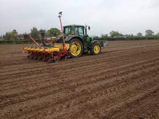
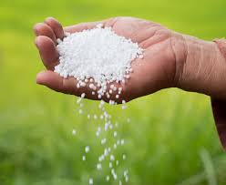
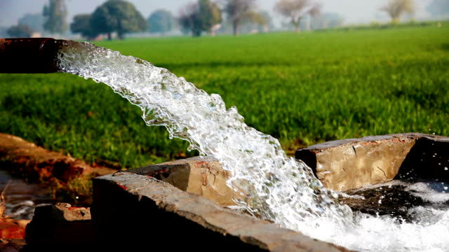
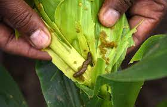
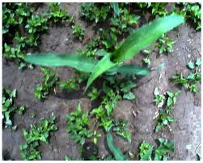
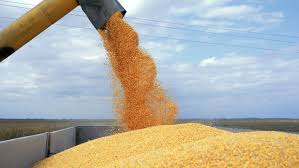

INTRODUCTION
INTRODUCTION Maize is the third most important cereal crop in Pakistan after Wheat and Rice. It is used as food, feed and industrial crop around the world. It contributes towards food security in several developing countries of Asia and Africa. Maize crop is called “the other gold” due to its diversified industrial consumption.
Maize being the highest yielding cereal crop in the world is a significant importance for countries like Pakistan.The area under maize here is over one million hectares and production 3.5 million metric tons. Punjab contributes 39 per cent of the total area under maize and 30 per cent of total production; KPK contributes 56 per cent of the total area and 63 per cent of the production while five per cent of the total area and three per cent of the total production is contributed by Sindh and Baluchistan.
Here we will be discussing important information about this crop in district sargodha.
Maize is a popular kharif fodder in Sargodha and finds much use as fodder for livestock and poultry. The crop can be harvested in 60 ~ 65 days and it can be grown in most parts of the Sargodha. The green stalk has high carbohydrate contents so it is an enchanting feed for poultry. Hybrid seed should not be used for fodder purposes because they have less foliage, and short stature with less nutrition.
Neelum, Akbar, Sargodha 2002 and Sultan. Sargodha 2002 is a new promising variety. It can remain green in the field for longer duration of time and the production can also be increased to 50 mand per acre with an average yield of around 600 mands per acre.
In Pakistan maize crop is mainly grown in two seasons i.e. spring and autumn. Spring maize can be planted in the first week of February to first week of March or from mid-December to mid-March and for autumn maize sowing time from mid-May to August
Maize is adapted to wide variety of soil but to get more yields it requires fertile deep and well-drained soils. Soils with a pH range of 6.5 – 7.5 are most favorable. Well drained, heavy soils with high organic matter content and good water holding capacity give high production. Waterlogged soil is most harmful for its cultivation.
Favorable conditions for germination and seedling establishment are the important objectives of seed bed preparation. The field should be given 3 – 4 times intercrossing harrowings followed by planking with each plough. In the case of drilling the field should be pre irrigated with 1 – 1.5 acre inch to fill the soil profile. After field capacity or field condition the light harrowing with planking should be done to preserve the soil moisture. Normal fine soil with small clods and compact bed is needed for maize.
Seed rate for hybrid maize is 8 – 10 kg per acre in the case of ridges sowing. Seed is dressed with some systemic insecticide, for example imidacloprid at the rate of 1g per kg of seed. Seed rate for fodder crop or for broadcasting is 40 – 50kg per acre.
Maize can be sown on both flat soils as well as on the ridges. Ridge sowing is better for water saving on flood irrigation. Ridges are made 75 cm apart with atractor drawn ridger. Choka method or manual sowing is practiced for ridge sowing. In case of flat sowing, maize is sown with automatic tractor drawn drill or manual/hand drill with 75 cm distance between the rows. Thinning is done after 10 – 15 days of emergence, consisting pulling out or cutting the weak plants and maintaining a plant to plant distance of 20 – 25cm or 8 – 10 inches. A plant population of 30,000 to 33,000 per acre is unavoidable to harvest optimal yields.
To obtain higher yields maintaining soil fertility is necessary to add manures or fertilizers to the soil. 300 – 400 maunds of farm yard manures, three to four weeks before sowing should be applied and mixed with soil. If FYM is not available then green manuring is recommended. Per acre recommended fertilizer dose for maize is 2 bags of DAP, 3.5 bags of Urea, 2 bags of SOP and one bag of Zinc sulphate of 10 kg. All phosphorus and potassium are side dressed at the time of drilling or incorporated at the time of 2nd land preparation and Zinc Sulphate is applied with irrigation. Urea should be 1st applied through fertigation system, application half bag 15 – 20 days after 2nd 3rd emergence, application one bag 30 – 40 DAE, application one bag 50 – 55 4th DAE and application 60 – 65 DAE.
Maize is drought sensitive crop and requires frequent irrigations for successful vegetative and reproductive growth. Drought will restrict many physiological processes leading to reduced yields. There are two major benefits of a Center Pivot System. The first is simply that plants receive water on a regular and consistent basis. Pivot irrigation systems allow plants to receive water every 3 days, on average. This allows the water to soak into the ground, promoting deep root growth which in turn encourages healthy plants. The second benefit to a center pivot is that water loss because of evaporation and drifting in the breeze is minimized. Pivots allow the sprinkler heads to be lowered to just inches above the tops of the plants, thus ensuring that most of the water reaches the crop and doesn't blow away in the wind. Maize crop water requirement is 22 – 27 inches or 550 – 700 mm.
Shoot-fly and stem borer are the major insect of maize. Shoot- fly can be control up to 40 days with seed treatment of Imidacloprid 70WS group @ 7.0 gm per Kg seed, while stem borer can be controlled with granule application of Carbofuran group @ 5-6 Kg per acre. However, army worm, American worm, termites, Jassid, aphid and mites may also attack the cop which should be controlled with proper sprays.
Leaf blight and stalk rot are important diseases of maize which can be controlled with seed treatment of Thiophenate methyl @ 2.0 gm per Kg of seed as preventive measure. If occurs, then spray Mancoxeb @ 500 gm per acre.
There are two types of weeds which affect the yield of maize. These are broad leaved weeds i.e. Krund, Bathu, Tandla, Jangli Palak, Jangli Hallo, Dhodak, Kulfa, Lehli & Itsit. As far as the grasses or narrow leaved weeds i.e. Khuble, Madhana, Swnki, Baru & Deela are the major weeds. For the control of common Broad leaf weeds & sedges Primextra Gold 720SC 1st herbicide at 400 – 800 ml per acre after irrigation in moist field is effective to control these weeds. Dual Gold at 800 ml per acre is used as pre-emergence herbicide. A hand hoeing about 25 days after sowing provides satisfactory weed control at small scale.
Maize crop is harvested when the moisture content of the grains is 20 – 25per cent. The cob sheath dries completely at this stage, some drying may occur on the stalk. Cobs are removed from standing crop and dried under sunlight until the moisture content of the grains is below 15 per cent.
Hand operated or powered maize shellers are better than manual or handshelling for safe exclusion of dried maize grains from cobs. Shelled maize grains after cleaning are stored in jute sacks in a cool, dry and airy place, either on acement floor or on wooden planks; it should not be stored on earthen floors. The temperature of store room is kept 20 – 25 °C while relative humidity is maintained at 30 – 50 percent.
The maize hybrids possess capability of producing more than 120 maunds grains per acre. The yield of local varieties is 40 – 50 maunds per acre.
Grain moisture for storing is 10 % which can be achieved by sun drying in thin layer and turning them twice in a day for 1-3 days depending upon season & sun light. The clean grains should be stored in fumigated stores.